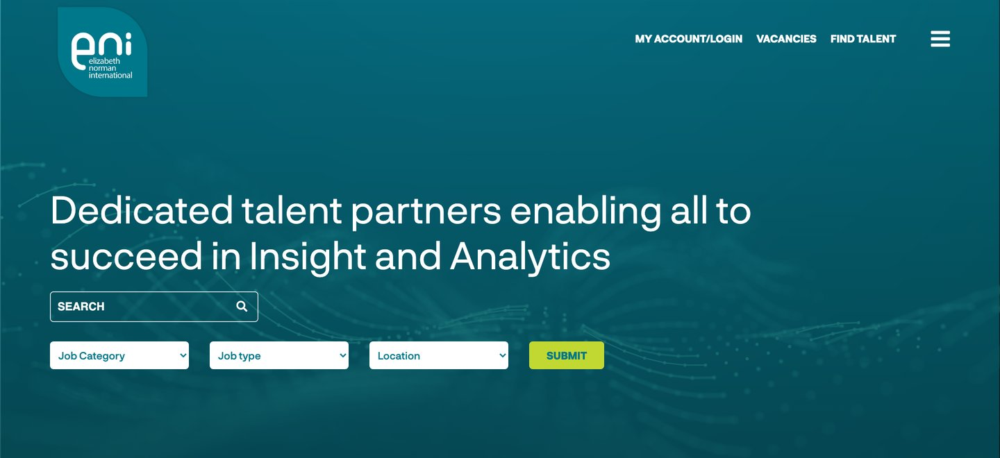

A website refresh for a specialist insight recruiter, founded 1989. Live at elizabethnorman.com.
to change a client logo. It used to need a developer.
form to apply. No account, no password, CV optional.
menu items, down from 9. One route for candidates, one for employers.
old links redirected, so bookmarks and search results still work.

The old homepage opened with a slogan and a search box. The new one says who ENI is in its first line, then offers two routes: find a role, or find a hire. ENI’s colours and logo stayed.